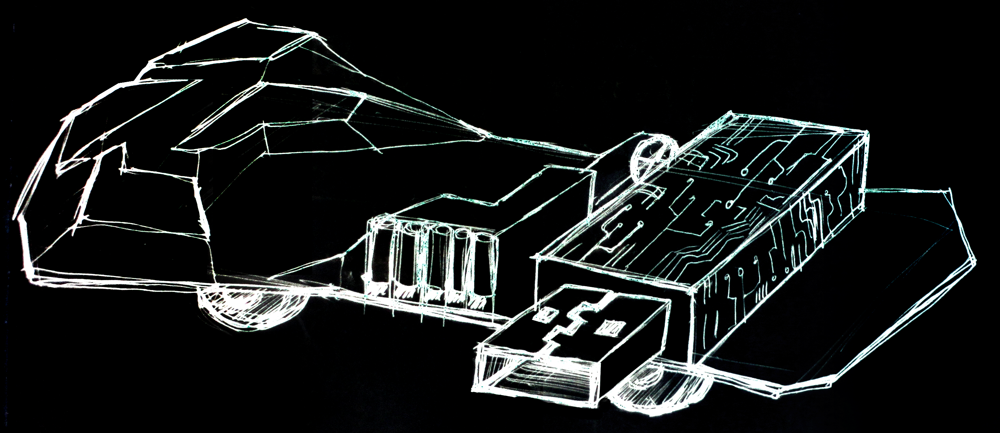
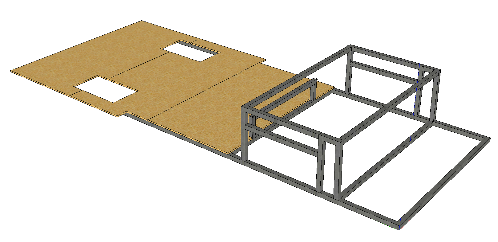
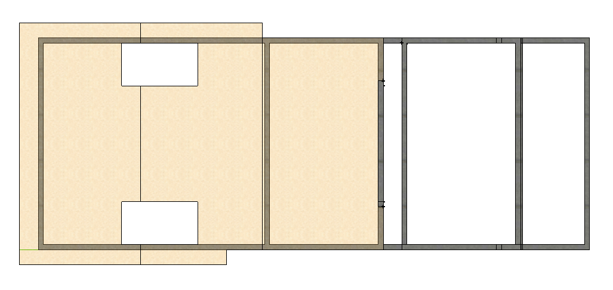

Concept
The USB has two functional requirements: to serve up cereal and to serve up beats.  We will have a cereal serving station on the side (where we mount the cereal tube dispensers), doubling as a DJ booth. Adjacent is a USB key table, which will have bar stools around it. There is ample seating on the car itself, where people can eat their cereal and hang out. We envision an abstract, polygonal seating structure, which will double as a projection mapping surface at night. The aesthetics of the USB are informed by outer space, technology, and the future.Safety Features
- Bright lighting at the front, back, sides, and underneath the vehicle
- Two brightly-lit designated entry points onto the vehicle
- Mirrors to provide vantage points of the sides and back of the vehicle
- Walled seating structure to prevent people from falling off the back of the vehicle
- Driver's area will be physically separated from the rest of the vehicle to prevent distraction
- The cockpit positioned as one of the highest points on the car so as to provide the greatest vantage point
- Co-pilot seat to ensure that both the driver-side and passenger-side have someone looking out
- A fire extinguisher and first aid kit onboard the vehicle at all times in case of emergency
- Easily removable engine cover to quickly address any problems as they occur
- The USB is easy to board and dismount and safe to ride. Since the platform section of the vehicle is only 3 feet high, boarding the vehicle doesn't pose any risk
- Our sound system will also provide a measure of safety since, in most cases, people will be able to hear the USB as well as to see its approach
- "Co-pilot seat" to ensure that both the driver-side and passenger-side have someone looking out
Basic Structure
 
Here are some recent photos from our Flickr feed. Click on a thumbnail to see a larger version.